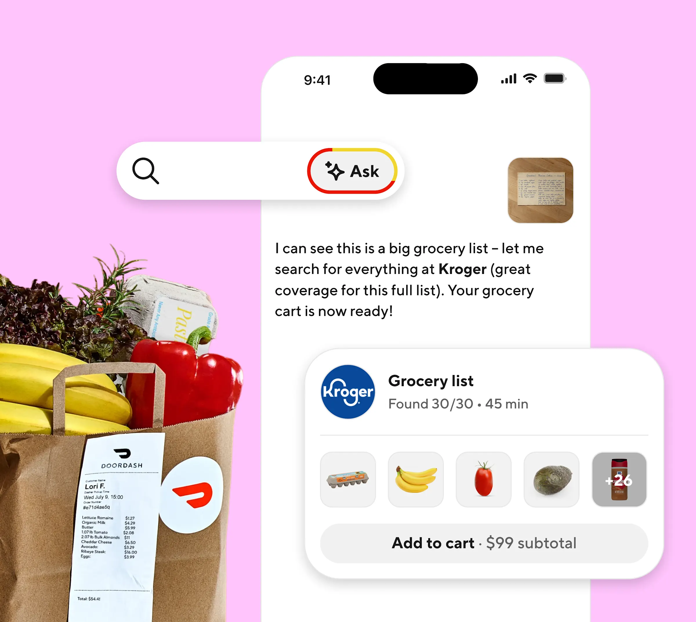
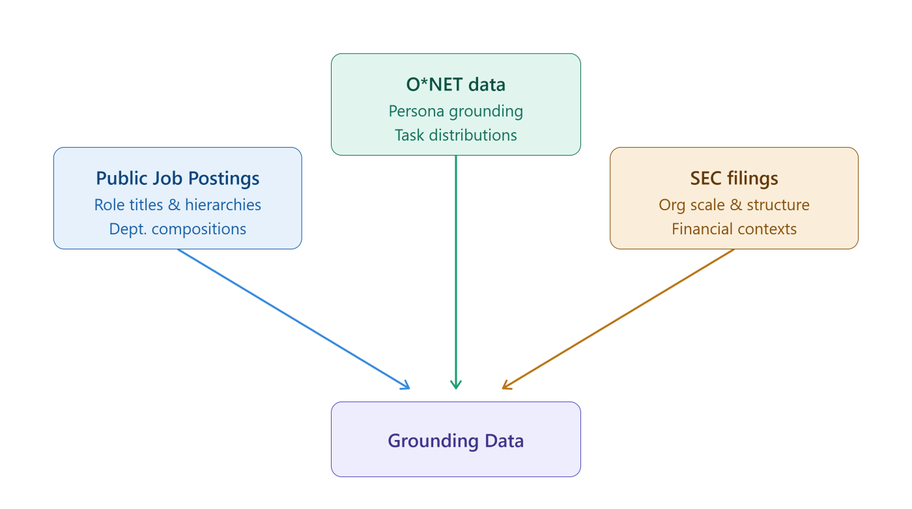

AI NEWS ISSUE 33
DoorDash가 밝힌 주문량, 외부 에이전트는 아직 수백 건
DoorDash의 주문 수부터 Microsoft의 합성 기업 환경을 활용한 평가까지, 에이전트가 실제로 쓰이고 제대로 일하는지 살펴봅니다. 웹사이트의 학습 허용 선택, 공격 도구 악용 사례, 기업 도입을 맡는 인력 소식도 전합니다.
AT A GLANCE
30초 요약
- DoorDash가 밝힌 외부 에이전트 경유 주문은 수백 건 수준입니다. DoorDash 자체 앱 안에서 제공하는 대화형 쇼핑의 이용량을 뜻하지는 않습니다.
- Microsoft는 가상의 조직과 업무 기록으로 구성한 합성 기업 환경에서 Microsoft Copilot을 평가합니다. 발표한 39% 개선은 답변 정확도가 아니라 평가에 쓸 합성 데이터의 품질 점수입니다.
- OpenAI·Google·Microsoft는 웹사이트가 모델 학습을 허용하는지 같은 형식으로 읽을 계획입니다. 적용 일정과 AI 답변의 참고 자료로 쓰는 정책은 업체마다 다릅니다.
- Google은 에이전트 기반 침투 테스트 프레임워크가 실제 침해사고에 악용돼 여러 공격 단계를 이어서 실행한 사례를 공개했습니다.
- Cognizant는 고객 기업의 OpenAI 도입을 맡을 기존 전문인력 2만 5천 명 이상을 한 조직으로 모았습니다.
자료 확인 2026년 10월 31일 한국시간 기준입니다. DoorDash의 10월 29일 실적 발표와 30일 보도, 주요 기업의 30~31일 공개 자료를 대조했습니다. 도입 일정은 발표한 계획입니다.
01 / DOORDASH
주문할 수 있는 기능과,
사람들이 선택하는 방식은 다릅니다
TechCrunch는 10월 30일, DoorDash CEO Tony Xu가 실적발표에서 외부 에이전트 주문을 누적 수백 건 수준으로 설명했다고 보도했습니다. 여기서 외부 에이전트는 보도 원문의 제3자 에이전트(third-party agents)를 뜻하며, 이들을 거쳐 DoorDash에 들어온 주문을 센 것입니다. 발언을 인용한 보도 ↗
외부 에이전트 경유
수백 건
CEO 발언을 인용한 보도 기준.
누적 집계의 시작 시점은 미공개입니다.
전체 주문 · 2026년 3분기
9억 9,300만 건
DoorDash 공식 완료 주문 지표인 Total Orders.
9월 30일에 끝난 분기 수치입니다.
외부 에이전트 주문은 누적치이고 전체 주문은 한 분기 수치여서, 이 둘을 나눠 외부 에이전트의 주문 비중을 구할 수는 없습니다. 10월 29일 공식 실적 ↗
DoorDash 자체 앱에는 대화형 검색 기능인 Ask DoorDash가 있습니다. 6월 공개한 기능으로, 레시피 사진이나 장보기 목록을 받아 상품을 찾고 장바구니를 준비합니다. 이용자는 상품을 검토하고 바꾼 뒤 결제합니다. 공식 제품 소개 ↗


고객이 어디에서 쇼핑을 시작할지가 쟁점입니다
두 사례를 함께 보면, AI 주문 기능을 만드는 일과 고객의 구매 경로를 바꾸는 일은 별개의 과제로 읽을 수 있습니다. 외부 에이전트가 새 주문 채널로 자리 잡으면, 상품을 찾고 비교하는 고객 접점이 DoorDash 밖의 AI 서비스로 옮겨갈 수 있습니다. Ask DoorDash는 그 접점을 자체 앱에 둔 채 기존 구매 과정을 개선하는 방식입니다. AI 쇼핑의 규모와 함께, 어느 서비스가 고객의 상품 탐색과 선택을 돕게 될지도 살펴볼 이유입니다.
다만 외부 에이전트 주문이 적다고 자체 앱의 AI가 더 성공적이라고 결론 내릴 수는 없습니다. 이 기사에서 확인한 자료만으로는 두 방식의 이용량·구매 전환·반복 사용을 같은 기준으로 비교할 수 없기 때문입니다.
고객이 다시 찾을 이유를 측정합니다
우리 서비스에서 두 경로를 비교한다면, 각 경로로 들어온 고객이 원하는 상품을 고르는 데 얼마나 걸렸는지, 장바구니를 몇 번 수정했는지, 다음 주문에서도 같은 경로를 선택하는지를 볼 수 있습니다. 주문 API가 잘 작동하더라도 확인할 일이 늘어난다면 고객은 익숙한 앱을 계속 선택할 수 있습니다.
구매 종류에 따라 고객의 어떤 수고를 줄일지도 정해 볼 수 있습니다. 반복 장보기라면 수량과 대체 상품을 고치는 횟수를, 처음 사는 고가 상품이라면 조건을 비교하고 최종 선택하는 데 드는 시간을 측정하는 식입니다.
02 / MICROSOFT RESEARCH
합성 기업 환경의 업무 이력으로,
Copilot이 근거를 찾는지 시험합니다
Microsoft Research는 10월 30일 Industry Evaluation Data Generation Platform을 소개했습니다. 업종별 평가 데이터를 생성해 Microsoft Copilot을 시험하는 내부 플랫폼입니다. 핵심은 실제 고객 데이터 없이 조직·사용자·이메일·회의·문서를 생성한 합성 기업 환경(synthetic enterprise environments)입니다. 시간이 지나며 업무 내용이 바뀌는 과정도 담으며, 제약, 자본시장, IT·소프트웨어의 세 업종을 대상으로 만들었습니다. Microsoft Research 원문 ↗


평가 쿼리(query), 즉 Copilot에 물을 질문도 생성한 자료에 맞춰 자동으로 만들고 정확성과 중복 여부를 검사합니다. Microsoft는 같은 설정으로 평가 데이터를 다시 만들 수 있도록 자동화했으며, 이 플랫폼을 내부 공유 카탈로그에 등록해 여러 팀이 재사용한다고 설명합니다.
Microsoft는 합성 데이터의 종합 품질 지표(composite quality metric)로 측정한 점수가 초기 생성 방식보다 39% 개선됐다고 발표했습니다. 합성 데이터가 실제 기업 환경의 복잡성과 패턴을 얼마나 잘 재현하는지 측정한 수치이므로 Copilot의 업무 정확도나 생산성 향상률을 뜻하지 않습니다.
일정이 바뀌면 정답과 근거도 달라집니다
예를 들어 월요일 회의에서는 금요일 출시를 정했지만, 수요일 메일에서 다음 주로 미뤘다고 해보겠습니다. 질문이 “월요일에 정한 일정”인지 “지금 유효한 일정”인지에 따라 근거와 답이 달라집니다. 이런 자료를 미리 만들어 두면 검색 방식이나 모델을 바꿨을 때 어느 쪽이 오래된 결정을 더 자주 선택하는지 비교할 수 있습니다.
다만 모든 일정 변경에 승인 메일이 빠짐없이 붙어 있는 자료만 만들면, 메일이 누락되거나 승인 기록이 서로 충돌하는 상황은 시험하지 못합니다. 합성 자료를 만들 때 이런 예외도 넣고, 각 질문에 어떤 답을 해야 하는지 사람이 근거와 함께 검토해야 평가에서 놓치는 문제를 줄일 수 있습니다.
03 / AI TRAINING PREFERENCES
학습에 쓸지 밝히는 신호를,
여러 업체가 함께 읽기로 했습니다
OpenAI는 사이트 운영자가 robots.txt에 표시한 학습 선호(training preference)의 공통 신호를 따르겠다고 발표했습니다. 콘텐츠를 생성형 AI 모델 학습에 활용하는 데 동의하는지 밝히는 신호입니다. Google·Microsoft도 같은 형식을 지원할 계획이어서, 운영자가 업체마다 별도 규칙을 관리하는 부담을 줄이려는 시도입니다. 기존 크롤러 제어도 유지합니다. OpenAI 한국어 원문 ↗
User-Agent: __usage_ai-training
Disallow: /
Allow: /press-kit//press-kit/ 아래의 콘텐츠는 허용한다는 뜻입니다. 이 사이트에 실제 적용한 설정은 아닙니다. 초안과 현재 상태 ↗이 신호를 정의한 문서는 개인이 제출한 Internet-Draft(인터넷 기술 규약 초안)으로, IETF가 승인한 표준은 아닙니다. 페이지를 수집해도 되는지를 알리는 기존 크롤러 규칙과 달리, 콘텐츠를 모델 학습에 써도 되는지 의사를 밝히는 용도입니다. 업체가 자발적으로 따르는 신호이므로 이를 무시하는 크롤러를 강제로 차단하지는 못합니다.
| 제공업체 | 발표한 일정과 범위 |
|---|---|
| OpenAI | 앞으로 몇 달 내 적용 목표. 기존 크롤러 제어는 계속 유지합니다. |
| 2027년 초 지원 계획. 공식 크롤러 문서 ↗ | |
| Microsoft | 2027년 2월 1일부터 재수집 과정에서 새 선호 적용. 기존 NoArchive·NoCache 이용자는 3월 1일 전 전환 조치가 필요합니다. Bing 전환 안내 ↗ |
Microsoft는 이와 함께 모델 학습(AI Training)과 그라운딩(AI Grounding)을 별도로 선택하도록 할 계획입니다. 여기서 그라운딩은 답변을 생성할 때 웹 콘텐츠를 입력으로 사용해 답변의 근거와 맥락을 제공하는 것을 뜻합니다. 두 선택은 일반 Bing 검색 결과의 노출 자격을 바꾸지 않으며, 세 업체가 공유하는 학습 신호와 달리 그라운딩 정책은 업체별로 확인해야 합니다.
예를 들어 쇼핑몰 운영자는 상품 페이지가 검색 결과나 AI 답변에 소개되기를 바라면서도, 그 내용이 모델 학습에 쓰이는 것은 원하지 않을 수 있습니다. Microsoft가 발표한 방식에서는 학습은 거부하고 그라운딩은 허용하는 식으로 선택할 수 있게 됩니다. 다만 활용을 허용한다고 실제 상품 노출이나 방문자 유입이 보장되는 것은 아닙니다.
기존 NoArchive·NoCache 설정으로 그라운딩을 제한해 온 사이트라면 전환 절차도 살펴야 합니다. 같은 제한을 유지하려면 페이지별 AI Grounding 설정뿐 아니라 Bing Webmaster Tools의 임시 그라운딩 전환 설정도 확인해야 합니다. Bing이 페이지를 다시 수집해야 새 지침을 읽을 수 있으므로, 파일을 수정한 즉시 적용되는 것은 아닙니다.
04 / GOOGLE THREAT INTELLIGENCE
에이전트가 여러 공격 단계를
이어서 실행한 사례가 나왔습니다
Google Threat Intelligence Group(GTIG)과 Mandiant는 실제 침해사고 조사에서 ARTEX·PentAGI·CAIRN 같은 에이전트 기반 침투 테스트 프레임워크(agentic pentesting frameworks)의 악용을 관찰했다고 밝혔습니다. 보안 점검을 위해 여러 에이전트와 도구를 조율하는 프레임워크가 실제 공격에 사용된 것입니다. 관찰은 2026년 8월 말부터이며, 보고서는 권한 탐색과 측면 이동(lateral movement) 등 여러 단계를 연결하는 사례를 설명합니다. 측면 이동은 침해한 계정이나 시스템을 발판으로 다른 내부 시스템에 접근하는 행위입니다. Google·Mandiant 보고서 ↗
한 사례에서는 AWS 권한을 탐색하는 23초의 집중 실행 구간에 이벤트 27개가 기록됐습니다. 전체 침투 시간은 아닙니다. 보고서는 빠른 시행착오가 많은 로그와 오류를 남기기도 하며, 현재의 활용이 아직 초기 단계라고 평가합니다.
| 영역 | 운영자가 확인할 사항 |
|---|---|
| 컨트롤 플레인 보호Control Planes | 환경을 관리·배포·재설정하는 API·콘솔·CI/CD에 신뢰할 수 있는 경로로만 접근하도록 제한합니다. |
| 아이덴티티·키 제한Identities & Keys | 사용자·서비스 계정의 인증 정보에 짧은 유효기간과 최소 권한을 적용하고, 사용할 수 있는 접속 경로도 제한합니다. |
| 보안 설정 강화Harden Configurations | 애플리케이션·인프라의 취약점을 지속적으로 점검하고, 시스템 사이의 불필요한 접근 경로를 줄입니다. |
| 애플리케이션 보호Application Protections | 대량 알림·계정 생성 같은 정상 기능이 악용되지 않도록 호출량·수신자 수·실행 규모에 한도를 둡니다. |
| 행동 변화 탐지Detect Behavioral Changes | 사용자·서비스 계정의 API 호출량·순서·접속 출처가 평소와 달라지는지 봅니다. |
Google·Mandiant 보고서의 방어 항목을 요약했습니다.
우리 서비스에 대입하면, 상품 조회용 계정에 운영 설정을 바꾸는 권한까지 줄 필요가 있는지 점검할 수 있습니다. 두 권한을 함께 주면 그 계정 하나로 조회와 설정 변경을 모두 시도할 수 있기 때문입니다. 조회에 필요한 권한만 주고, 낯선 접속 출처에서 권한 탐색과 대량 조회가 이어지는지도 함께 살펴보는 식입니다. 이상 징후를 발견했을 때 담당자가 호출을 중단하거나 계정 권한을 회수할 수 있어야 탐지가 실제 대응으로 이어집니다.
05 / COGNIZANT
2만 5천 명 이상이,
고객 기업의 OpenAI 도입을 맡습니다
Cognizant는 10월 30일 OpenAI Frontier Capability Group을 출범시켰습니다. 고객 기업의 시스템에 OpenAI 제품을 구현하고 운영하기 위해 기존 전문인력 2만 5천 명 이상을 모은 조직입니다. Cognizant 공식 발표 ↗
OPENAI FRONTIER CAPABILITY GROUP
전문인력 2만 5천 명 이상
고객 기업의 OpenAI 도입·운영을 맡습니다
AI 네이티브 소프트웨어 엔지니어링
Codex로 코드 작성·테스트·출시를 지원합니다.
애플리케이션 현대화
OpenAI 기반 Cognizant Application Modernizer로 기존 메인프레임 코드를 역공학하고 클라우드 네이티브 코드를 생성합니다.
주요 판단은 엔지니어가 검토합니다.
에이전트 기반 고객 업무 운영
영업·서비스·지원 업무에 OpenAI 모델을 적용합니다.
회사는 직원 2만 1천 명 이상이 관련 학습 과정을 이수해 4만 개 이상의 배지를 받았다고 밝혔습니다. 이 인원수와 교육 이수 실적만으로 고객 업무가 얼마나 빨라졌는지를 알 수는 없습니다.
개발 도구 도입과 업무 서비스 성과를 나눠 봅니다
별도의 고객 사례로는 글로벌 바이오 제약회사와 공동 개발한 OpenAI 기반 기업용 AI 어시스턴트를 소개했습니다. 검색·콘텐츠 생성·번역·승인을 모은 서비스가 500만 건 이상의 대화를 처리했고 콘텐츠 생성 시간을 60% 줄였다는 Cognizant의 설명입니다. 측정 기간과 세부 비교 조건은 공개하지 않았습니다. 이 수치를 Codex를 쓴 개발자의 생산성 향상률로 옮겨 읽을 수는 없습니다.
우리 프로젝트에 대입해 보면, AI 어시스턴트를 만들 때는 직원별로 볼 수 있는 문서 범위와 생성한 내용을 승인할 담당자를 정해야 합니다. 승인 처리가 실패하면 작성 중이던 내용을 보존하고 담당자가 이어받게 만드는 일도 개발자의 몫입니다. 이런 절차까지 연결해야 직원이 실제 업무에서 AI 어시스턴트를 계속 사용할 수 있습니다.
OUR VIEW
자주 쓰는지와,
정확하게 처리하는지를 따로 확인합니다
DoorDash의 수치는 외부 에이전트를 거친 주문이 얼마나 들어왔는지 보여줍니다. Microsoft의 합성 기업 환경은 업무 기록에서 답을 제대로 찾는지 시험하기 위해 만든 것입니다. 시험에서 답을 잘 찾더라도 고객이 다시 사용할지는 별도 문제이므로, 우리 프로젝트에서도 정확도와 반복 사용을 따로 확인해야 합니다.
운영 과정에서 확인할 일도 다릅니다. 사이트 운영자는 콘텐츠를 학습이나 답변에 어디까지 활용하도록 허용할지 정하고, 서비스 개발자는 계정이 실행할 수 있는 작업과 이상 행동을 멈출 방법을 설계해야 합니다. Cognizant의 발표는 이와 별개로 고객사의 업무 시스템에 OpenAI를 연결하고 운영할 인력을 마련하는 움직임입니다.
우리 모임에서 자동화의 효과를 기록할 때도 모델 호출 횟수와 함께, 결과를 받은 사람이 근거를 다시 찾거나 오류를 고치는 데 쓴 시간을 재면 좋겠습니다. 그래야 호출은 늘었는데 사람의 일이 줄지 않은 경우를 찾아 다음 개선에 반영할 수 있습니다.
OUR LAB · 실험 제안
바뀐 출시 일정과 담당자를,
근거를 붙여 찾아내는 작은 평가를 만듭니다
Microsoft의 합성 기업 환경을 활용한 평가를 작게 따라 해보려 합니다. 가상 프로젝트의 월요일 회의록에는 “11월 6일 출시, 담당자 A”라고 적혀 있고, 수요일 승인 메일은 “11월 13일로 연기, 담당자 B”라고 바꿉니다. 목요일에는 월요일 회의록을 복사한 문서가 새로 올라옵니다. 가장 늦게 등록된 파일을 우선하면 이미 바뀐 과거 일정이 답에 들어갈 수 있는 상황입니다.
“지금 일정과 담당자는 누구인가요?”라는 요청에 11월 13일·B를 답하고, 수요일 승인 메일을 근거로 붙이는 것이 목표입니다. 아직 실행하지 않은 실험 제안입니다.
파일 등록 시각과 결정 시각을 나눠 봅니다
- ① 사람이 변경 이력을 정합니다월요일 결정 → 수요일 승인된 변경 → 목요일에 등록된 과거 문서 사본. 사본은 새 결정으로 취급하지 않습니다.
- ② 코드가 자료 묶음을 만듭니다정해 둔 이력을 바탕으로 회의록과 메일을 만들고, 문서 ID·결정 시각·등록 시각·승인 상태를 함께 저장합니다. 질문별 정답 파일은 검증기에만 전달합니다.
- ③ 모델이 답과 근거를 반환합니다일정, 담당자, 근거 문서 ID, 확정 또는 보류 상태를 반환합니다. 승인된 기록이 서로 충돌하면 확인이 필요하다고 답합니다.
- ④ 검증기가 기대 결과와 대조합니다날짜·담당자·상태는 고정된 정답과 비교하고, 근거가 실제 변경을 뒷받침하는지는 사람이 확인합니다.
과거를 묻는 질문과 현재를 묻는 질문을 나눕니다
먼저 변경 이력 8묶음으로 문서 생성기와 답변 지침을 조정합니다. 최종 평가는 별도로 작성한 이력 12묶음에 질문을 두 개씩 붙인 24건으로 고정합니다. 위 사례라면 “월요일에 정한 일정과 담당자”와 “지금 유효한 일정과 담당자”를 각각 묻는 식입니다.
같은 이력의 이름만 바꾼 자료를 양쪽에 넣으면 이미 조정에 쓴 문제를 다시 푸는 셈이므로, 조정용과 평가용 이력은 따로 만듭니다. 문서의 표현을 모델로 생성하더라도 결정과 정답은 사람이 정한 이력에서 만듭니다.
첫 번째 방식은 질문과 관련된 문서를 찾아 파일 등록 시각이 최근인 순서로 모델에 전달합니다. 두 번째 방식은 질문이 가리키는 시점까지 승인된 결정과 변경 이력을 우선 찾아, 결정 시각·등록 시각·승인 상태를 함께 전달합니다. 위 사례에서 현재 일정을 묻는다면 목요일에 등록한 사본보다 수요일의 승인된 변경을 우선하는 방식입니다.
모델·답변 지침·전달할 문서 수는 같게 두어 검색 방식의 차이를 비교하고, 정답 파일은 검색 대상과 모델 입력에서 제외합니다.
승인되지 않은 변경안만 추가됐다면 기존에 승인된 일정을 답해야 합니다. 반면 승인 메일이 서로 충돌하거나 결정에 필요한 첨부파일이 빠져 일정을 확정할 수 없다면 판단을 보류해야 합니다. 이런 예외를 자료에 넣고, 검색 시간 초과나 응답 형식 오류는 판단 보류와 구분해 시스템 실패로 기록합니다. 이 실험의 도구에는 가상 자료를 읽는 권한만 줍니다.
정확도와 사람이 다시 확인하는 시간을 함께 잽니다
각 방식으로 24건을 세 번 실행합니다. 답을 확정할 수 있는 질문은 날짜·담당자·근거를 모두 맞혀야 정답으로 셉니다. 보류가 정답인 질문은 날짜와 담당자를 임의로 채우지 않고, 보류 상태와 그 근거를 맞혔는지 확인합니다. 이렇게 맞힌 건수를 회차별 24건으로 나눠 정답률을 구하고, 답할 수 있는데 보류한 건수와 시스템 실패도 따로 셉니다. 과거 결정을 현재 결정으로 답한 오류는 별도 표시합니다.
두 방식의 결과를 섞어 같은 검토자가 확인·수정에 걸린 시간을 잽니다. 검토를 반복할 때는 순서를 바꾸되, 같은 자료를 기억해 시간이 짧아질 수 있다는 한계도 기록합니다. 응답 시간과 토큰 사용량·재시도 횟수도 함께 남깁니다.
자료 종류와 예외 상황을 늘려 다음 평가로 넘어갈지는 현재 일정에 과거 결정을 적용한 오류 0건, 근거 없는 확정 0건, 첫 번째 방식 이상의 전체 정답률과 더 짧은 검토 시간을 기준으로 판단해 볼 수 있겠습니다. 이는 준비한 사례에서의 통과 조건이며, 실제 사용자의 업무 시간과 반복 사용 여부는 이후 시험에서 확인합니다.
다시 비교할 수 있도록 변경 이력·합성 문서·정답 파일과 검색 설정·모델·지침 버전을 함께 남깁니다. 실행 기록에는 모델에 실제로 전달한 문서와 답변을 저장하고, 오류를 유형별로 정리합니다. 그래야 검색 방식이나 모델을 바꾼 뒤 같은 자료로 평가해 무엇이 개선됐는지 확인할 수 있습니다.
읽은 자료
- TechCrunch · DoorDash CEO의 외부 에이전트 주문 발언 2026. 10. 30 / DoorDash 공식 3분기 실적 2026. 10. 29
- DoorDash · Ask DoorDash 제품 소개 2026. 06. 11
- Microsoft Research · 합성 기업 환경과 평가 데이터 생성 2026. 10. 30
- OpenAI · 웹사이트가 AI 학습에 대한 의사를 더 쉽게 밝힐 수 있도록 2026. 10. 30
- IETF Datatracker · Machine-Readable Training Preference Signal 개인 제출 초안 00, 2026. 10. 30
- Google · Google-Extended와 2027년 초 지원 계획 / Microsoft Bing · 학습·grounding 선택과 전환 일정
- Google·Mandiant · ARTEX와 에이전트 공격 도구 분석 2026. 10. 31 확인
- Cognizant · OpenAI Frontier Capability Group 출범 2026. 10. 30
이미지 두 장은 각 기업이 공개한 공식 자료입니다. ‘모임에서 해볼 실험’의 절차와 기대 결과는 이 기사에서 제안한 내용입니다.